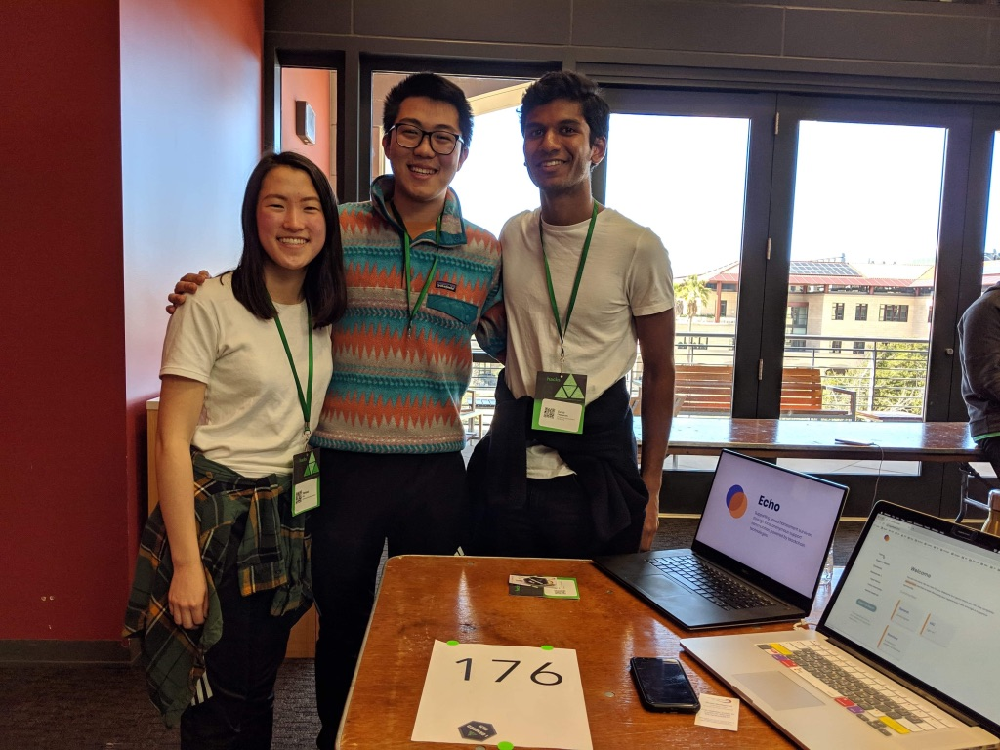
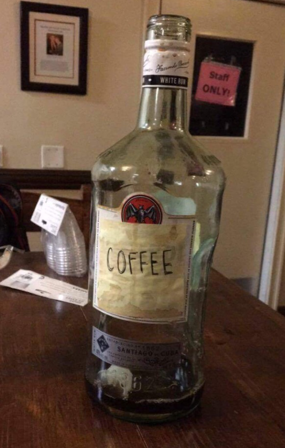
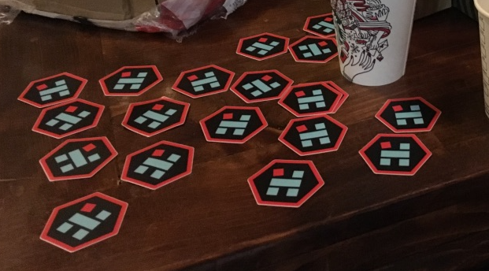
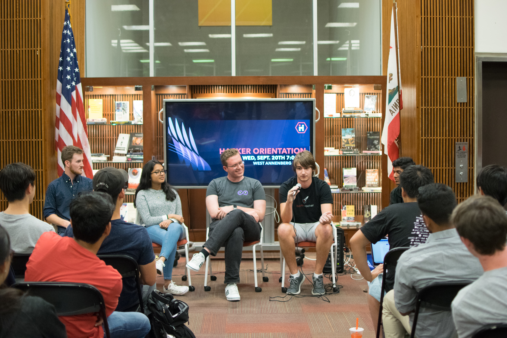

Hi, I'm Suvir!
I'm a programmer from Issaquah, Washington, currently studying at USC in Los Angeles.
I love creating things, reading tech and philosophy blogs, and listening to and learning about music.
You can reach me at suvirc_17@live.com.
Projects I'm proud of
Echo is an online platform to help sexual assault survivors anonymously receive support, legal and medical resources, and report incidents to authorities. My team is still early in developing the app, so if you're an expert in this space or know someone who is, please reach out! We'd appreciate any and all feedback and advice we can get.

Spark SC is an organization at USC dedicated to enabling the entrepreneurial spirit in others, helping students find the people, inspiration, and creative confidence to work on the projects they are most excited about. I was on the leadership team last year and helped recruit bright new members, organize a dozen committees around this mission, and push our board to achieve as much impact at USC as possible. You can learn more here.

USC Hackers is an initiative I worked on to help USC students of all backgrounds work on technical projects they were interested in. A few friends and I befriended a friendly coffee shop owner on campus to host weekly hack nights with our own cold brew coffee by Irfan, event experience by Martin, and branding by Teresa.



We also developed this snazzy invitation to our "Hacker Orientation" event, which attracted over 150 aspiring hackers to learn about hacking culture and personal projects at USC.
I've also interned at Square, where I developed features for Square Point of Sale. This summer I'll be interning on Square Capital.
People I've enjoyed learning from
Andrew Kortina's blog (founder of Venmo and Fin) melds philosophical and technological ideas using really interesting media.
Some of my favorites are his bio and this piece about technological determinism and what made Venmo special.
Bret Victor is a futurist trying to and rethink education and make computing more accessible.
He wrote an interesting piece about how technologists can impact climate change and challenged my assumptions about what programming is and can be in this talk.
Tim Urban has written loads of articles on his blog, waitbutwhy, about technology, politics, careers, and lots more.
His piece on brain computer interfaces changed how I think about technological progress and the future.
Art that has moved me
Some questions you may have for me
Why is your website so f****** simple?
I kept myself from making this page for a long time because I wanted to create the perfect personal webpage - I decided it'd be better to put out a work in progress and share the content that's important to me.
What is your purpose?
For now, I think it is to help people around me find agency and happiness in their lives. I have a lot of thoughts on technology and impact if you're interested in chatting about that as well.
Think you're real clever, do you?
Sometimes... If you believe you can teach me something, please do.